Map projections
Nicolas Lambert
2026-06-08
Source:vignettes/map_projections.Rmd
map_projections.RmdIn this document, we explore map projections: what they are, why they
are used, and how they are implemented in the planisphere
package. We begin with the basic concepts behind cartographic
projections and their role in representing the Earth’s curved surface on
a flat map. We then look at how these projections can be used in
practice within planisphere to create a wide range of map
visualizations.
In short, this document combines a bit of theory with a bit of practice to help you understand and work with map projections in R.
Let’s get started!
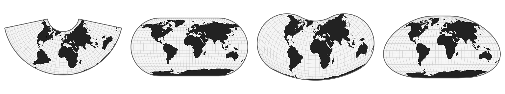
What are map projections?
The Earth is a sphere (more precisely, a geoid), a three-dimensional object floating in space. Yet the maps we use every day are flat: they exist in two dimensions, on paper or on a screen. To move from this curved reality to a flat representation, we need to transform coordinates expressed on the globe in latitude and longitude into Cartesian coordinates on a plane. This is not a simple flattening operation: it relies on a mathematical transformation known as a map projection. Projections are generally classified according to the geometric surface used as an intermediate step : cylindrical, conic, or azimuthal, each offering a different way of “wrapping” the globe before unfolding it.
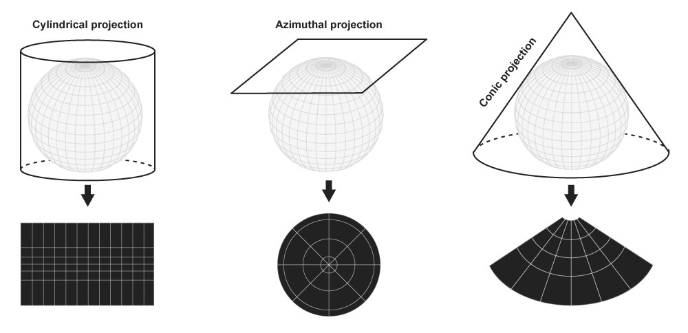
Beyond classical geometric constructions, there is also a family of pseudoprojections, which are not based on a strict developable surface but are instead defined analytically to reduce and balance distortions. This category includes pseudocylindrical, pseudoconical, and pseudoazimuthal projections, which relax geometric constraints in order to produce more visually or statistically balanced representations of the world. Closely related are discontinuous projections, which introduce intentional breaks or cuts in the map (typically along selected meridians or regions) in order to manage and redistribute distortion, improving the representation of key areas at the expense of global continuity. Finally, some approaches rely on more piecewise mathematical constructions, such as polyhedral projections, where the globe is first mapped onto a polyhedron (e.g., an icosahedron or a cube) before being unfolded into the plane.
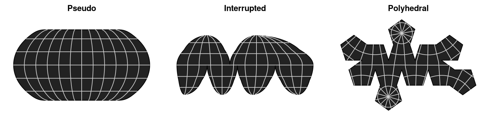
However, map projections inevitably introduces distortions. In a way, it is similar to trying to press the peel of an orange onto a flat table. No matter how carefully you proceed, the surface cannot lie flat without consequences: it will stretch in some places, compress in others, and may even tear or fold if forced. The same fundamental constraint applies to the Earth’s surface when projected onto a plane. No projection can preserve all geometric properties at once, meaning that distances, areas, shapes, or directions are always altered to some degree, depending on the chosen projection and its purpose. These distortions can be visualized using Tissot’s indicatrix, a diagnostic tool that represents how infinitesimal circles on the globe are transformed into ellipses on the map, making it possible to assess locally how a projection deforms angles, areas, and shapes across space.
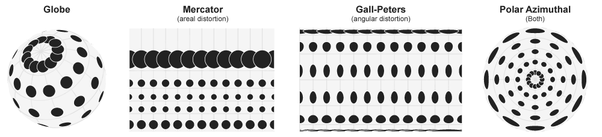
Geodesic vs Spherical model
The Earth is not a perfect sphere; in geodesy it is more accurately
approximated by an ellipsoid. This refinement accounts for the slight
flattening at the poles and provides the mathematical foundation for
high-precision geospatial computations. However, in the
planisphere package, we adopt a spherical
model of the Earth for simplicity and consistency with its
visual and geometric goals. It is more than sufficient for producing
maps at a global scale. If you need to work directly with ellipsoidal
models and geodesic accuracy, other tools such as GDAL or PROJ are more
appropriate, as they operate on ellipsoidal Earth representations.
The planisphere package
The planisphere package provides more than one hundred map
projections. These are grouped into different categories: “cylindrical”,
“conic”, “azimuthal”, “perspective”, “pseudocylindrical”, “interrupted”,
“polyhedral”, “quincuncial”, “regional”, “pseudoazimuthal”, and
“miscellaneous”. You can retrieve their names and visualize them using
the registry() and gallery() functions.
Let’s take a look at the available projections.
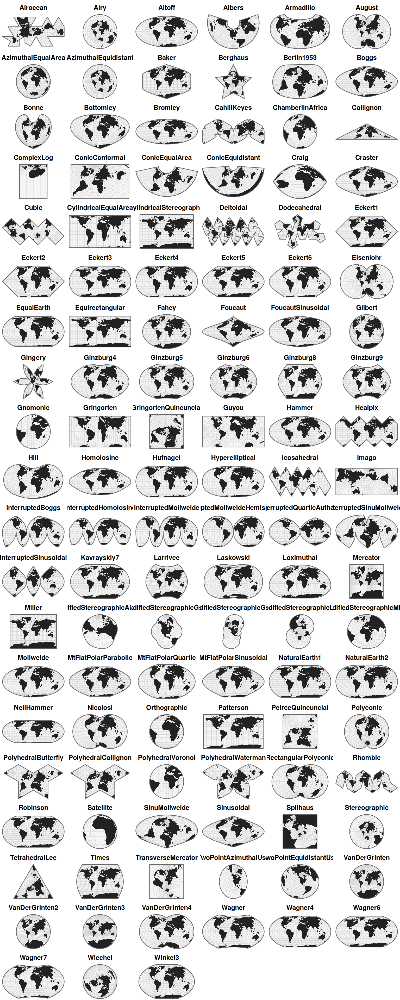
Project a baseamap
The main function of the package is project(), which can
be used to project any spatial data frame.
Let’s load a world basemap.
library(sf)
world <- st_read(
system.file("gpkg/land.gpkg", package = "planisphere"),
quiet = TRUE
)We can now project it.
spilhaus <- planisphere::project(world, proj = "Spilhaus",
additional_layers = TRUE)The additional_layers parameter allows you to retrieve,
together with the projected basemap, the sphere and the graticules. We
can visualize the whole set using the display()
function.
planisphere::display(spilhaus, title = "Spilhaus")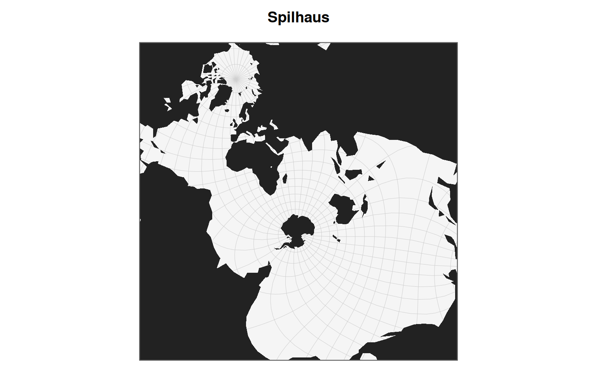
Custom projections
Projection functions accept many parameters that allow projections to be customized. Here are some examples of what is possible.
- Peirce Quincuncial
Charles Sanders Peirce developed his quincuncial projection in 1879. The name refers to the way the four quadrants of the world are arranged in a square around a central hemisphere. In its standard form, the projection is centered on the North Pole, which gives greater emphasis to the Northern Hemisphere.
peirceN <- planisphere::project(
x = world,
proj = "PeirceQuincuncial",
rotate = c(-25, -90),
additional_layers = TRUE
)
peirceS <- planisphere::project(
x = world,
proj = "PeirceQuincuncial",
rotate = c(-25, 90, 180),
additional_layers = TRUE
)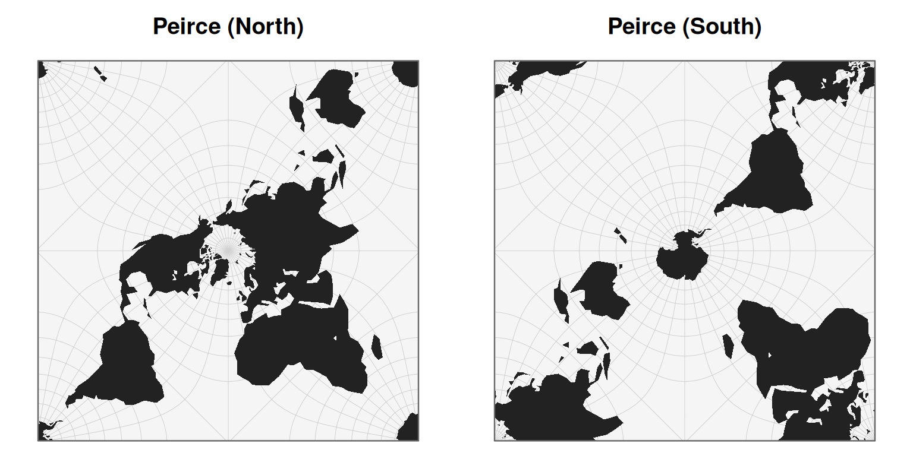
- Gall-Peters
The Gall–Peters projection, popularized in 1973 by Arno Peters and originally based on the work of James Gall in the 19th century, is an equal-area cylindrical map projection that preserves relative surface areas while significantly distorting shapes. It is often contrasted with the Mercator projection (1569), which preserves angles but exaggerates the size of high-latitude regions. In its “inverted” versions, the map is flipped along the north–south axis, placing the Southern Hemisphere at the top. This does not alter the mathematical properties of the projection, but it challenges conventional map orientation and the symbolic hierarchy embedded in standard world representations.
peters <- planisphere::project(
x = world,
proj = "CylindricalEqualArea",
parallel = 45,
rotate = c(167, 180),
additional_layers = TRUE
)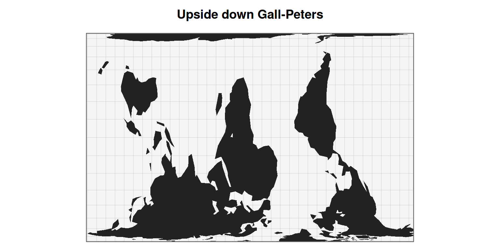
- Polar projection
The polar projection, popularized in the mid-20th century by Richard Edes Harrison in the 1940s, represents the world from a top-down view centered on the North Pole. It highlights the continuity of landmasses and oceans around the Arctic rather than the usual east–west framing. This type of projection was widely disseminated through the United Nations emblem, adopted in 1945, which is based on an azimuthal equidistant projection centered on the North Pole, symbolizing a world without a dominant center.
polar <- planisphere::project(
x = world,
proj = "geoAzimuthalEquidistant",
clipAngle = 150,
rotate = c(0, -90),
additional_layers = TRUE
)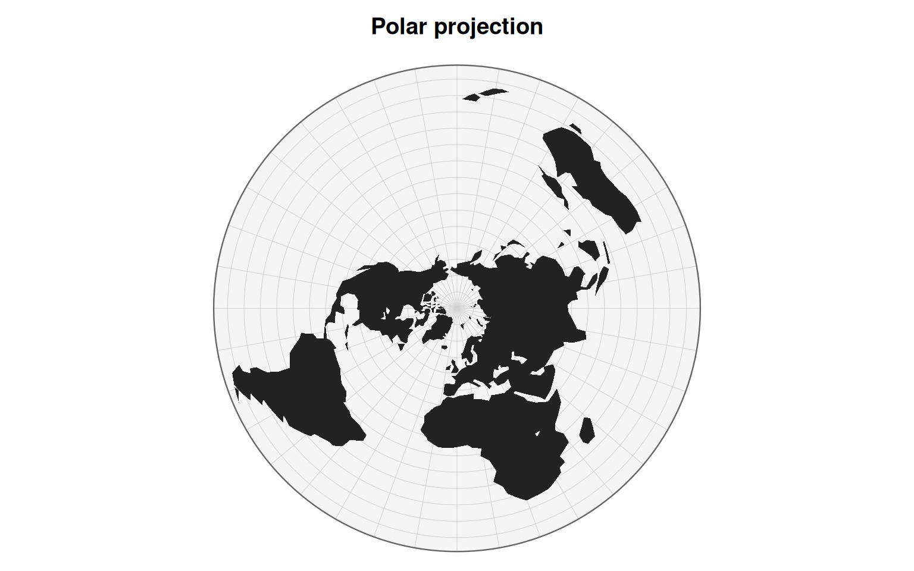
- Hao Xiaoguang projection
Hao Xiaoguang is a Chinese cartographer known for developing modern equal-area world map projections that aim to preserve area relationships while reducing visual distortion. His work is part of a contemporary approach to alternative world map design, seeking more balanced representations that are less centered on Euro-American cartographic conventions.
hao <- planisphere::project(
x = world,
proj = "geoHufnagel",
a = 0.8,
b = 0.35,
psiMax = 50,
ratio = 1.6,
angle = 90,
rotate = c(110, -200, 90),
additional_layers = TRUE
)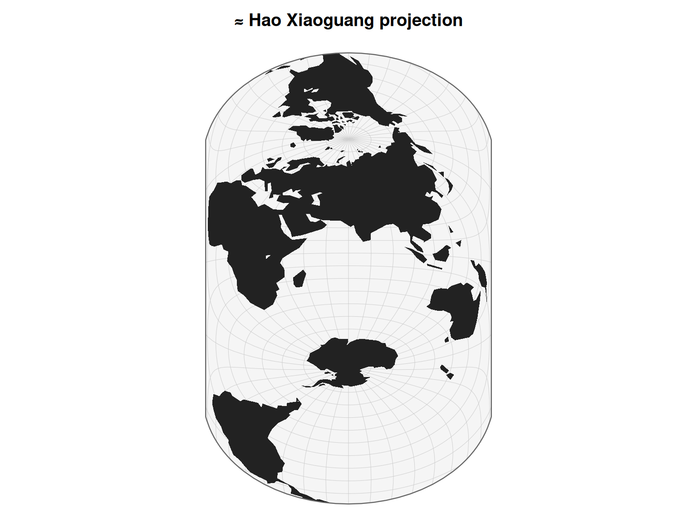
A last trick
The spherical model is less accurate than the geodesic model. Nevertheless, it can still provide a fairly good approximation of standard map projections. Let’s look at two geographic areas: France and Europe.
First, let’s retrieve some data online.
europe <- sf::st_read("https://gisco-services.ec.europa.eu/distribution/v2/nuts/gpkg/NUTS_RG_20M_2024_4326_LEVL_0.gpkg", quiet = TRUE) |>
sf::st_crop(xmin=-10, xmax=45, ymin=25, ymax=72)
france <- europe[europe$ISO3_CODE == "FRA",]- Europe (LAEA)
The Lambert azimuthal equal-area (LAEA) projection is an azimuthal
projection centered on a point located in the heart of Europe,
officially defined around (10°E, 52°N). From this center, directions are
preserved, and areas are represented accurately. It is the official
projection used in Europe. In planisphere, this projection can be
reproduced using the “AzimuthalEqualArea” projection by adjusting the
rotate parameter.
- France (Lambert 93)
The Lambert 93 projection is a conformal conic projection officially
used in France for cartographic and geospatial applications. In
planisphere, it can be reproduced using a conic projection
by specifying the appropriate parallels and
center parameters for metropolitan France. Because
ConicConformal function produce artifacts outside the area of interest,
the clipExtent parameter has to be used to properly clip
the resulting map. Please refer to the d3.js documentation to understand
how this mechanism works.
lambert93 <- planisphere::project(france,
proj = "ConicConformal",
rotate = c(-3,0),
center = c(0, 46.5),
parallels = c(44,49),
clipExtent = list(c(0, 0), c(1000, 1000))
)Et voilà!
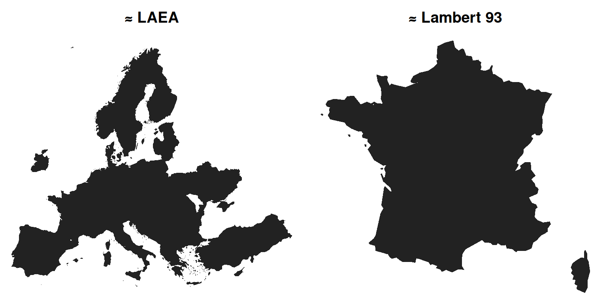